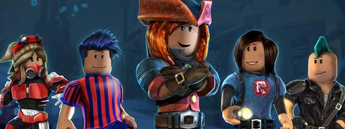

- Escola
- Estudante
- Trabalhos
Roblox é uma plataforma de criação em que os jogadores podem tanto desenvolver seus próprio jogos quanto participar dos que foram criados pelos outros usuários. A game base costuma ser elogiada por seu caráter didático, uma vez que pode ajudar as crianças a aprimorar várias habilidades.
Fizemos uma lista com os 15 melhores jogos de Roblox caso você esteja interessado em explorar esse mundo.
Começamos a lista com esse jogo popular. Ele foca no cuidado: os gamers se tornam pais ou filhos adotivos e precisam cuidar das necessidades da vida, mais ou menos como acontece no The Sims.
O Arsenal é um frames per second (FPS) no qual o jogador precisa enfrentar outros oponentes usando armas mortais e meio malucas. Os combates vão correndo e o objetivo máximo é conseguir a Faca Dourada — com ela, é possível matar o adversário e vencer a partida.
